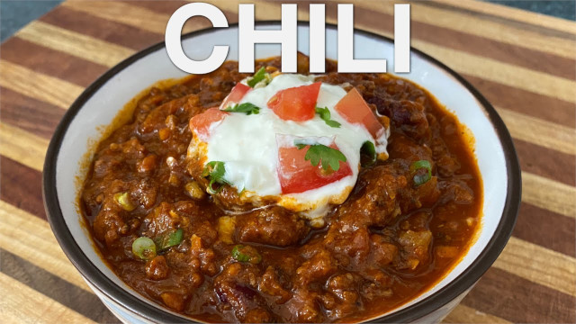

Chili

Basic Chili
The following recipe is a modified version of You Suck at cooking
recipe. Chili is a dish that is very easy to make your own as it is endless customizable.
There is no wrong way to make chili, but this is a good way to start.
Ingredients
- 2 Pounds Ground Meat (Beef, Turkey, Chicken, etc...)
- 1 pound Onion (Yellow or White)
- 1 Green Bell Pepper
- 4 Cloves of Garlic
- 1 Tsbp Olive Oil
- 28oz Crushed Tomatoes
- 2 Tsbp of Chili Powder
- 1 Tsbp of Ground Cumin
- 1-3 Tsp Kosher Salt (Adjust to taste)
- 1 Tsp of Black Pepper
- 1-2 Cans of Beans (Kidney, Black, etc...)
- 1 Cup of Water